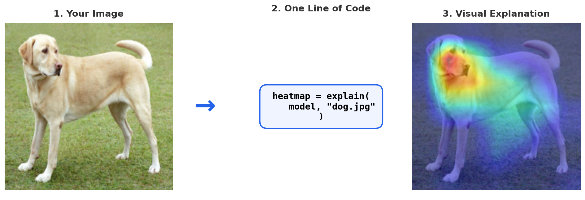
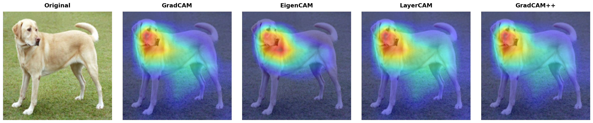
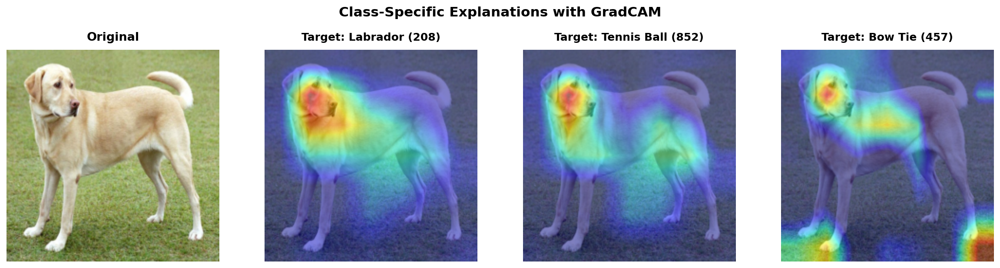
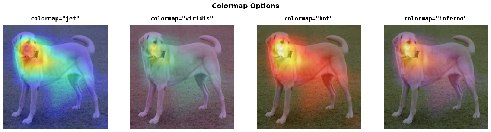
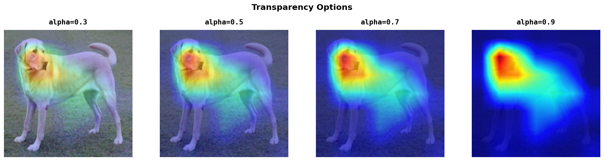

torchxai
Explain any PyTorch vision model in one line of code.
10 methods. 24 models verified end-to-end. CNNs, ViTs, YOLO26, RF-DETR, DINOv2, and more.


Quickstart • Installation • Methods • Examples • API Reference • Troubleshooting
Why torchxai?¶
Most explainability libraries make you write 20+ lines of boilerplate, only work with specific model architectures, and crash on Vision Transformers. torchxai does it in one line:
from torchxai import explain
heatmap = explain(model, "photo.jpg")
That's it. It works with any PyTorch vision model — ResNet, ViT, EfficientNet, CLIP, YOLO, Swin, DeiT, DINO, and more. No config files. No architecture-specific code. No boilerplate.

What makes it different¶
| Feature | torchxai | pytorch-grad-cam | captum | tf-explain |
|---|---|---|---|---|
| One-line API | ✅ explain(model, img) |
❌ 15+ lines | ❌ 20+ lines | ❌ TF only |
| Auto-detects architecture | ✅ CNN + ViT + YOLO | ❌ Manual config | ❌ Manual config | ❌ |
| Vision Transformer support | ✅ Native | ⚠️ Partial | ⚠️ Partial | ❌ |
| String path input | ✅ explain(m, "dog.jpg") |
❌ | ❌ | ❌ |
| Headless server support | ✅ Auto Agg backend | ❌ Crashes | ❌ | ❌ |
| Built-in metrics | ✅ Insertion/Deletion/Stability | ❌ | ⚠️ Separate | ❌ |
| Graceful fallbacks | ✅ Always produces output | ❌ Crashes | ❌ Crashes | ❌ |
⚡ Quickstart¶
3 lines to your first explanation¶
from torchxai import explain
import torchvision.models as models
model = models.resnet50(pretrained=True)
heatmap = explain(model, "dog.jpg") # Returns (224, 224) numpy array
Visualize it¶
from torchxai import explain, show_explanation
from PIL import Image
model = models.resnet50(pretrained=True)
heatmap = explain(model, "dog.jpg")
show_explanation(Image.open("dog.jpg"), heatmap, title="What the model sees")
Compare methods side by side¶
from torchxai import explain, create_comparison
from PIL import Image
heatmaps = {
"GradCAM": explain(model, img, method="gradcam"),
"EigenCAM": explain(model, img, method="eigencam"),
"LayerCAM": explain(model, img, method="layercam"),
"GradCAM++": explain(model, img, method="gradcam_pp"),
}
create_comparison(Image.open("dog.jpg"), heatmaps, save_path="comparison.png")

📦 Installation¶
pip install torchxai-explain
Requirements: Python 3.8+ and PyTorch 1.9+. That's all.
For development:
git clone https://github.com/rigvedrs/torchxai.git
cd torchxai
pip install -e ".[dev]"
🔬 Methods¶
torchxai includes 10 explainability methods. Each produces a saliency heatmap showing which image regions matter most for the model's prediction.
| Method | Type | Needs Gradients | Best For |
|---|---|---|---|
| GradCAM | Gradient-weighted | ✅ | General-purpose CNN explanation |
| GradCAM++ | Gradient-weighted | ✅ | Multiple objects of same class |
| LayerCAM | Gradient-weighted | ✅ | Fine-grained spatial detail |
| EigenCAM | Activation-based | ❌ | Fast, gradient-free explanation |
| ScoreCAM | Perturbation-based | ❌ | Most faithful, no gradients |
| SmoothGrad | Input gradients | ✅ | Pixel-level attribution |
| Integrated Gradients | Axiomatic | ✅ | Theoretically grounded |
| RISE | Black-box sampling | ❌ | Model-agnostic, any architecture |
| Attention Rollout | Attention-based | ❌ | Vision Transformers (ViT) |
| Transformer Attribution | Gradient + Attention | ✅ | Class-specific ViT explanation |
Don't know which to pick? Just use explain(model, image) — it auto-selects the best method for your model architecture.
→ Detailed method guide with math and intuition
🎯 Features¶
Accept any input format¶
# Tensor (already preprocessed)
heatmap = explain(model, tensor)
# PIL Image
heatmap = explain(model, Image.open("dog.jpg"))
# File path (string or Path)
heatmap = explain(model, "dog.jpg")
heatmap = explain(model, Path("dog.jpg"))
# 3D tensor (auto-adds batch dimension)
heatmap = explain(model, torch.randn(3, 224, 224))
Class-specific explanations¶
Ask "why did the model predict THIS class?" instead of just "where is it looking?"
heatmap_dog = explain(model, img, target_class=208) # Labrador
heatmap_ball = explain(model, img, target_class=852) # Tennis ball
heatmap_collar = explain(model, img, target_class=457) # Bow tie

Customizable visualization¶
from torchxai import overlay_heatmap, show_explanation, save_heatmap
# Overlay on image
blended = overlay_heatmap(image, heatmap, colormap="jet", alpha=0.5)
# Side-by-side visualization
show_explanation(image, heatmap, save_path="output.png")
# Save raw heatmap
save_heatmap(heatmap, "heatmap.png", colormap="viridis")
Colormap options:

Transparency control:

Quantitative metrics¶
Don't just look at heatmaps — measure how good they are:
from torchxai import insertion_score, deletion_score, stability_score
# Does removing highlighted pixels drop confidence? (lower = better)
d_score = deletion_score(model, tensor, heatmap)
# Does revealing highlighted pixels restore confidence? (higher = better)
i_score = insertion_score(model, tensor, heatmap)
# Are explanations consistent under small perturbations? (higher = more stable)
s_score = stability_score(GradCAM(model), tensor)
Works on headless servers¶
No more TclError: no display name crashes. torchxai auto-detects headless environments (SSH, Docker, CI) and switches to the Agg matplotlib backend. Visualization functions save to files or return numpy arrays — no display required.
📖 Examples¶
CNN Explainability (ResNet, EfficientNet, VGG)¶
import torchvision.models as models
from torchxai import explain, show_explanation
from PIL import Image
# Any torchvision model
model = models.resnet50(pretrained=True)
# Explain
heatmap = explain(model, "cat.jpg")
# Visualize
show_explanation(Image.open("cat.jpg"), heatmap, save_path="resnet_explanation.png")
Vision Transformer (ViT, DeiT, Swin)¶
import timm
from torchxai import explain
# Any timm model — auto-detected
model = timm.create_model("vit_base_patch16_224", pretrained=True)
heatmap = explain(model, "photo.jpg") # Just works
Custom target layer¶
from torchxai import GradCAM
# By name
cam = GradCAM(model, target_layer="layer3")
# By module reference
cam = GradCAM(model, target_layer=model.layer3[-1])
heatmap = cam("photo.jpg")
Batch comparison script¶
from torchxai import explain, create_comparison
from PIL import Image
model = ... # Your model
image = Image.open("test.jpg")
results = {}
for method in ["gradcam", "eigencam", "layercam", "gradcam_pp"]:
results[method] = explain(model, image, method=method)
create_comparison(image, results, save_path="all_methods.png")
📚 Documentation¶
| Document | Description |
|---|---|
| Getting Started | Installation, first explanation in 60 seconds |
| API Reference | Every function, every parameter, return types |
| Methods Guide | How each method works, when to use which |
| Advanced Usage | Custom layers, metrics, deployment, optimization |
| Troubleshooting | Common errors with exact fixes |
| Model Compatibility | Tested models with proof images |
| Contributing | How to contribute |
🤝 Contributing¶
Contributions are welcome. See CONTRIBUTING.md for guidelines.
git clone https://github.com/rigvedrs/torchxai.git
cd torchxai
pip install -e ".[dev]"
pytest tests/ -v
📄 License¶
MIT License. See LICENSE for details.
⭐ Citation¶
If you use torchxai in your research, please cite:
@software{torchxai2026,
title={torchxai: Universal Explainability for PyTorch Vision Models},
author={Rigved Sandeep Shirvalkar},
year={2026},
url={https://github.com/rigvedrs/torchxai}
}
If torchxai helps your work, consider giving it a ⭐